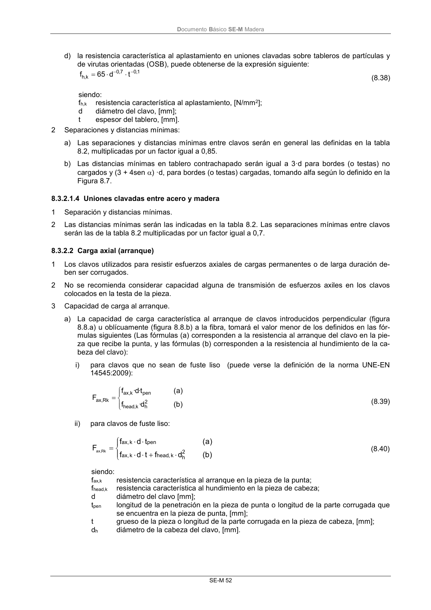

DB-SE-M Madera · edición 2019-12-20 · capa oficial
Documento DB-SE-M-oficial · SHA-256 del PDF 26b5819839ebfda78b0b119c5e76a0a37773b0d763c05688541870075df93718
Copia fiel del PDF fuente · Fuente oficial
Ficha de la disposición en la fuente oficial
Formatos: JSON del segmento · Markdown
8.3.2.1.3 Uniones clavadas entre tablero y madera 1 Resistencia al aplastamiento: a) las reglas que figuran a continuación son aplicables en clavos cuya cabeza tenga un diámetro mayor o igual a 2·d; b) la resistencia característica al aplastamiento en uniones clavadas en tablero contrachapado pue- de obtenerse de la expresión siguiente: 3 , 0 k k,h d 11 ,0 f (8.36) siendo: fh,k resistencia característica al aplastamiento, [N/mm2]; k densidad característica del tablero contrachapado, [kg/m3]; d diámetro del clavo, [mm]. c) la resistencia característica al aplastamiento en uniones clavadas en tablero de fibras duro (se- gún la norma UNE-EN 622-2:2004): puede obtenerse de la expresión siguiente: 6 , 0 3 , 0 k,h t d 30 f (8.37) siendo: fh,k resistencia característica al aplastamiento, [N/mm2]; d diámetro del clavo, [mm]; t espesor del tablero, [mm]. DocumentoBásico SE-M Madera SE-M 52 d) la resistencia característica al aplastamiento en uniones clavadas sobre tableros de partículas y de virutas orientadas (OSB), puede obtenerse de la expresión siguiente: 1,0 7 , 0 k,h t d 65 f (8.38) siendo: fh,k resistencia característica al aplastamiento, [N/mm2]; d diámetro del clavo, [mm]; t espesor del tablero, [mm]. 2 Separaciones y distancias mínimas: a) Las separaciones y distancias mínimas entre clavos serán en general las definidas en la tabla 8.2, multiplicadas por un factor igual a 0,85. b) Las distancias mínimas en tablero contrachapado serán igual a 3·d para bordes (o testas) no cargados y (3 + 4sen ) ·d, para bordes (o testas) cargadas, tomando alfa según lo definido en la Figura 8.7.
